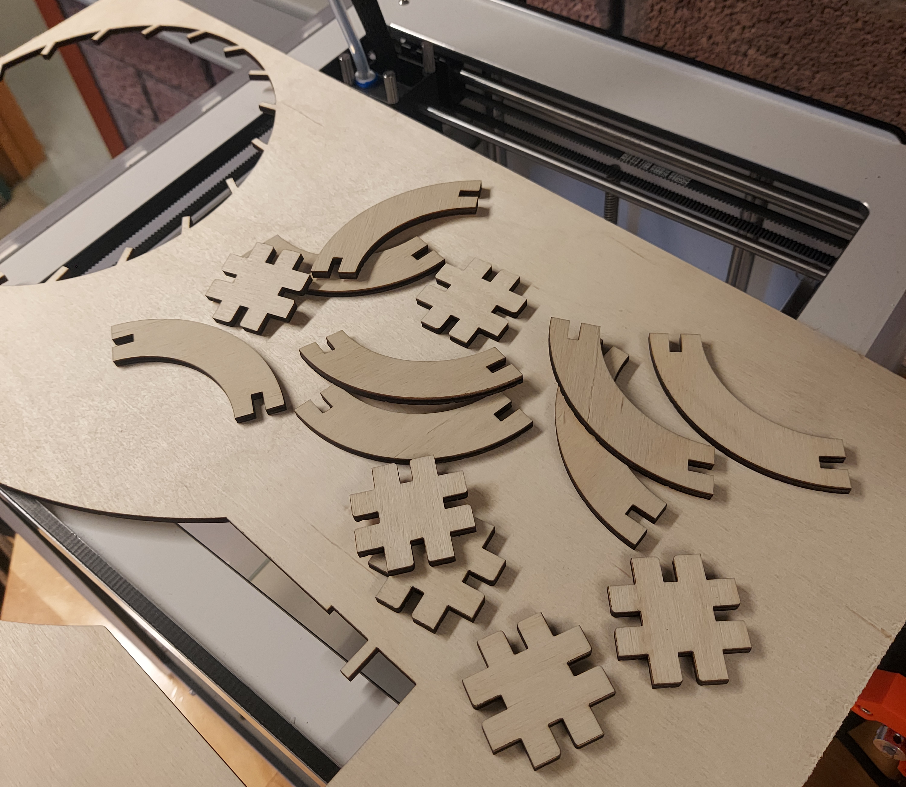
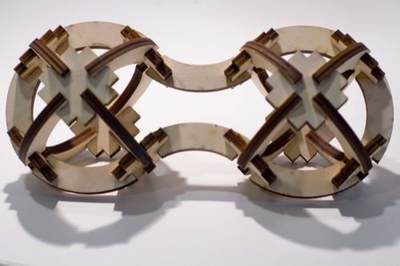
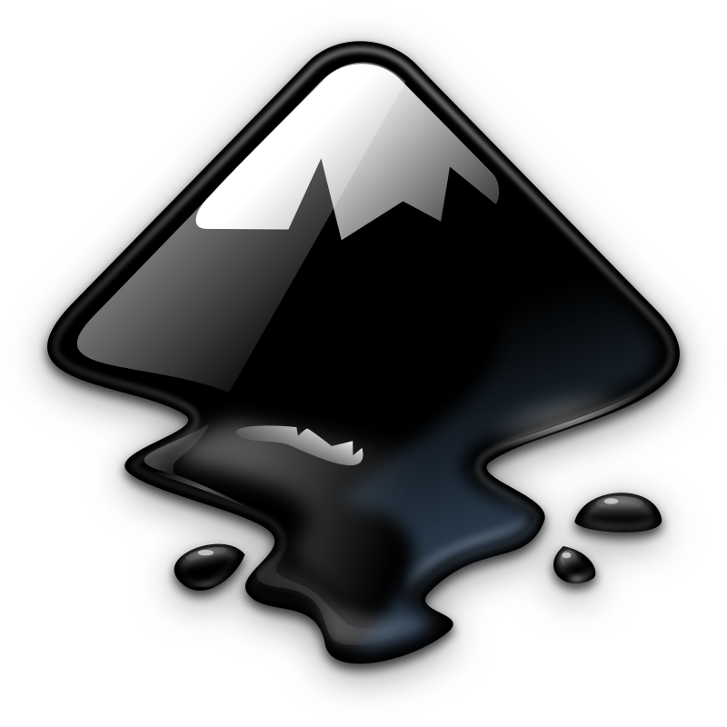
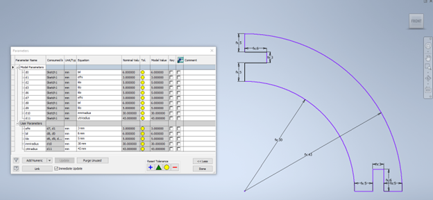
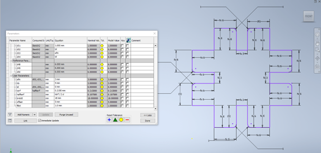
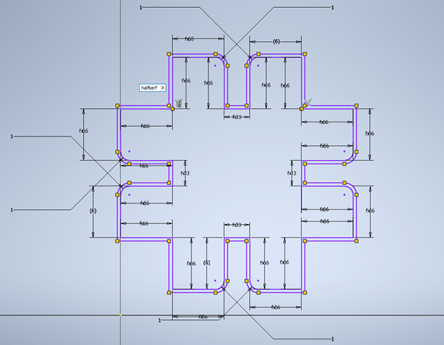
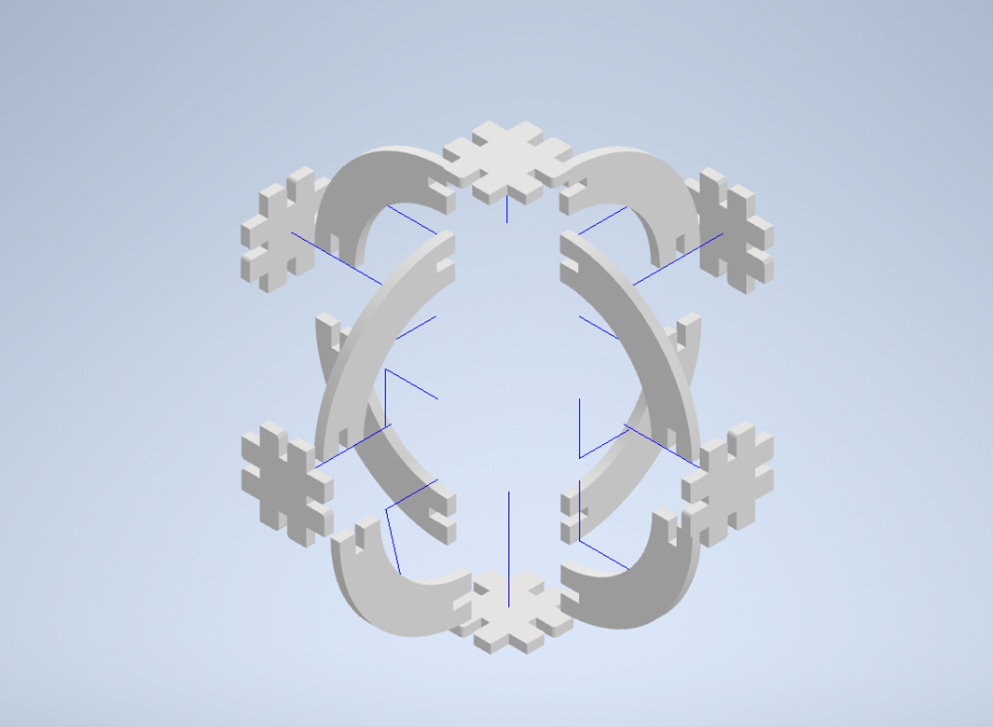
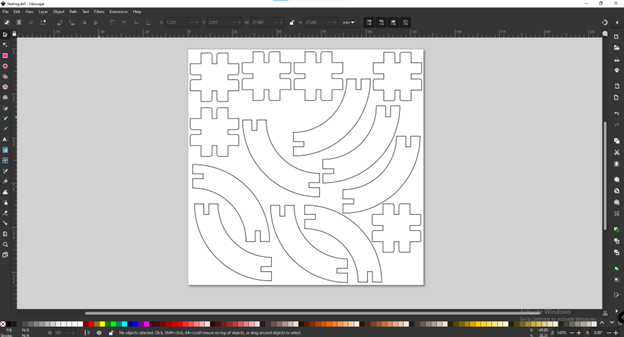
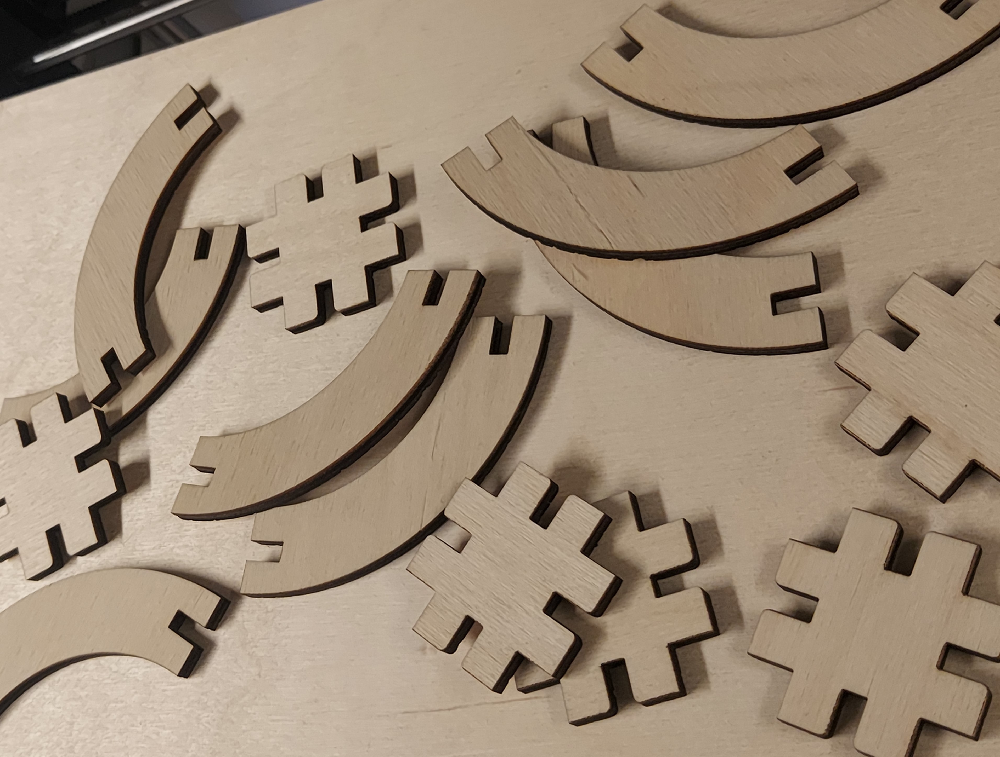
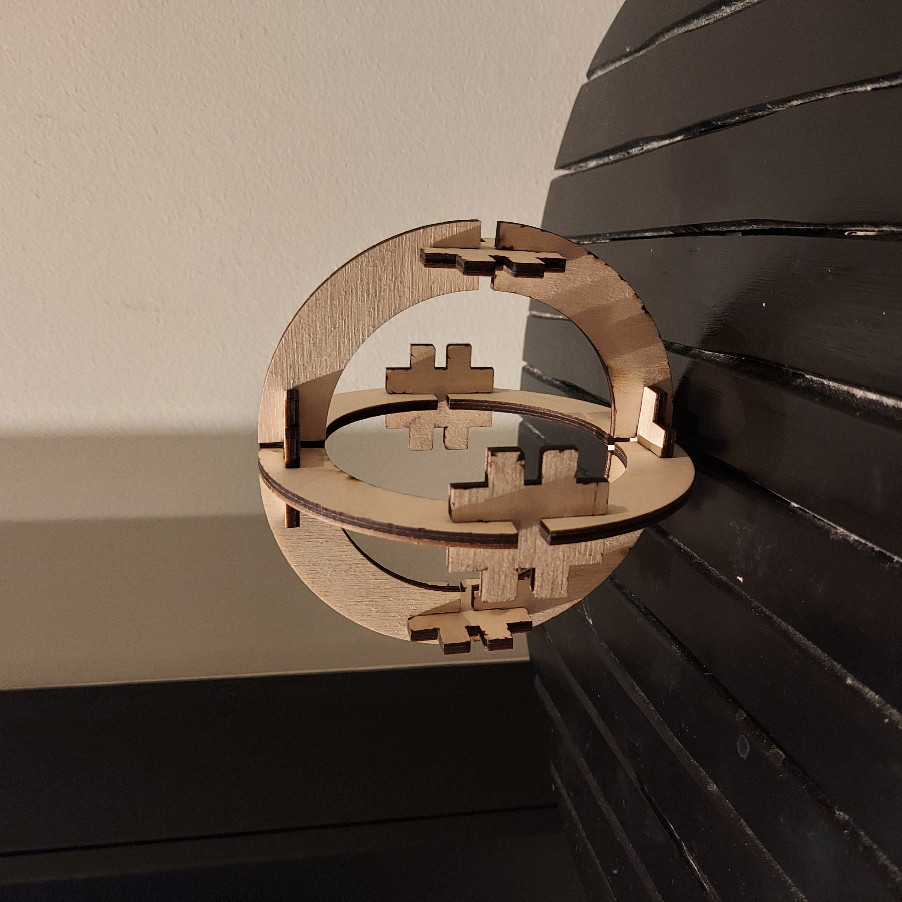

Markmið
Markmið verkefnisins var að útbúa og laser skera pressfit einingar sem hægt væri að setja saman. Módel af einingunum þarf að vera skalanlegt með parametrískum breytum þannig hægt sé að stilla kerf, efnisþykkt, lengd, breidd og aðrar breytur. Hægt var að velja á milli tveggja gerðar af efni, birkikrossvið eða akríl (glært, svart eða hvítt) og var platan 500mm x 500 mm.
Hugmyndavinna
Ég byrjaði á að fara inn á Google og skoða svipuð verkefni til að fá hugmyndir. Ég ákvað að nota birkikrossviðinn því mér fannst það vera fallegasta efnið.

Ég fann þessa mynd og ákvað að gera mjög svipað nema einn bolta eða "dome". Hluturinn er úr tveimur einingum sem ég mun kalla festingu og arm.
Undirbúningur
Áður en eitthvað var hægt að gera varð að ákvarða kerf-ið á laser skeraranum, þ.e. þykktina á lasernum þegar hann sker gegnum efnið. Hér má sjá góða lýsingu á því hvernig það er gert. Eftir tilraun kom í ljós að kerf-ið fyrir okkar skerara væri 0,22 mm.
Þá var loks hafist handa við að hanna módelið. Ég ákvað að nota Inventor 2023 til að teikna upp módelið því ég hef góða reynslu á því. Einnig notaði einnig forritið Inkscape til þess að geta skorið út hlutinn en nánar um það seinna.

Framkvæmd
Inventor vinna
Ég byrjaði á að teikna arminn. Fyrst slumpaði ég einhverjum tölum inn í parametrana og breytti þeim þangað til að ég var sáttur með útlitið.

Síðan teiknaði ég festingarnar sem festa alla armana saman. Mikilvægt er að bilið þarf sem armurinn og festingin festast saman sé sama og efnisþykktin svo allt helst þétt saman.

Nú þegar 2D teikningarnar voru komnar þá þurfti að gera ráð fyrir kerfinu áður en lengra var haldið. Það var gert með að taka 2D sketchin og offsetta þær með hálfri lengdinni á kerf (0,11 mm) og notaði ég offset fítusinn í Inventor (Sjá myndina að neðan). Mikilvægt er að nota hálft kerf því laserinn mun elta jaðarinn sem við höfum nú búið til með að offsetta og mun brenna upp hálft kerf sitthvorum megin við línuna. Síðan eyddi ég "gömlu" línunum sem eru að innanverðu.

Ég gerði þetta bæði fyrir festinguna og arminn og vistaði teikningarnar sem .dxf file. Til gamans gaf ég teikningunum efnisþykkt og gerði assembly til að sjá hvernig hluturinn myndi líta út í 3D.

Hérna sést hvernig hann er settur saman.

Inkscape
Núna kom ég .dxf file-unum sem ég bjó til inn í Inscape og raðaði þeim upp á blaðið mitt sem var stillt á 500mm x 500mm því það er stærðin á plötunni sem ég mun skera.

Til að stilla línuþykktir fór ég í Object > Fill and Stroke (eða Shift+Ctrl+F) og valdi ég undir Fill flipanum > No paint, Stroke paint > Flat color og loks Sroke style > Width > 0,2 mm. Mikilvægt er að stilla á mm, ekki px sem er default. Þegar allt það var komið þá vistaði ég sem pdf og setti á USB lykil og tengdi við laser skerarann. Eitt stykki krossviðsplata var sett í skerarann og var skurðurinn settur í gang. Ég stillti skerarann þannig að Speed = 10, Power = 100 og Freq. = 10.

Niðurstaða
Hér má sjá mynd of lokaniðurstöðunni. Verkefnið gekk mjög vel fyrir sig. Ég lenti í því að þurfa að skera hlutinn tvisvar sinnum því fyrst gleymdi ég að stilla blaðið mitt í mm frekar en px svo ekki var hægt að púsla hlutnum saman. En eftir að ég breytti í mm og skar aftur gekk allt upp.

Mínar ráðleggingar til þann sem vill gera svipað verkefni er að nota Inventor því það er miklu einfaldara að mínu mati.